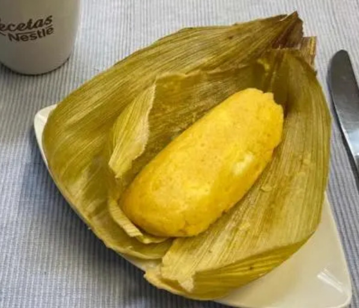

Envueltos de maíz

Descripción
Los envueltos de mazorca son bollos de maíz enrollados en la misma hoja de la mazorca que suelen rellenarse de queso, melao, pasas o bocadillo.
Ingredientes
- 4 mazorcas tiernas (Blanditas)
- 1 taza de queso campesino
- Media libra queso mozzarella
- 1/4 taza harina de maíz
- 4 cucharadas mantequilla derretida
- 2 huevos batidos
- 1 cucharadita de polvo para hornear
- Media taza de melado (agua con panela)
- 1 pizca sal
- Uvas pasas al gusto
- Hojas de mazorca
Pasos
- Toma las mazorcas y desgránalas.
- Luego toma los granos y llévalos al molino.
- Después en un recipiente mezcla el maíz molido, la mantequilla derretida, el polvo para hornear, los huevos, la harina de maíz y la pisca de sal. Luego, agrega también el queso molido o rallado, como lo prefieras.
- En primer lugar, con la ayuda de una cuchara de madera agita la mezcla, ve agregando poco a poco el melado, debes ir probando para que esté a tu gusto. De igual manera revisa la consistencia de la mezcla, si está muy aguada debes agregar poco a poco más harina de maíz. Posteriormente, si lo deseas, puedes agregar uvas pasas en este paso.
- Luego toma una hoja de mazorca (amero) y agrega la mezcla, la cantidad indicada es justo lo que un cucharon promedio puede tomar. Después con la ayuda del mismo cucharon espárcela y dobla el resto de hoja muy bien, el objetivo es que no se salga la mezcla.
- Pon en la base de la olla unas cuantas tusas, luego organiza uno a uno los envueltos y agrega agua al nivel de los envueltos, si lo deseas puedes cubrirlos con papel aluminio, para que el vapor los ayude a cocinar.
- Cada 15 minutos revisa la olla, si se acaba el agua agrega más. La cocción tardará aproximadamente 60 minutos.
- Finalmente, transcurrido el tiempo, retira los envueltos. Los puedes servir con chocolate, tinto o cualquier otra bebida. En algunas regiones los envueltos son el acompañante de cenas y platos fuertes.
Go back